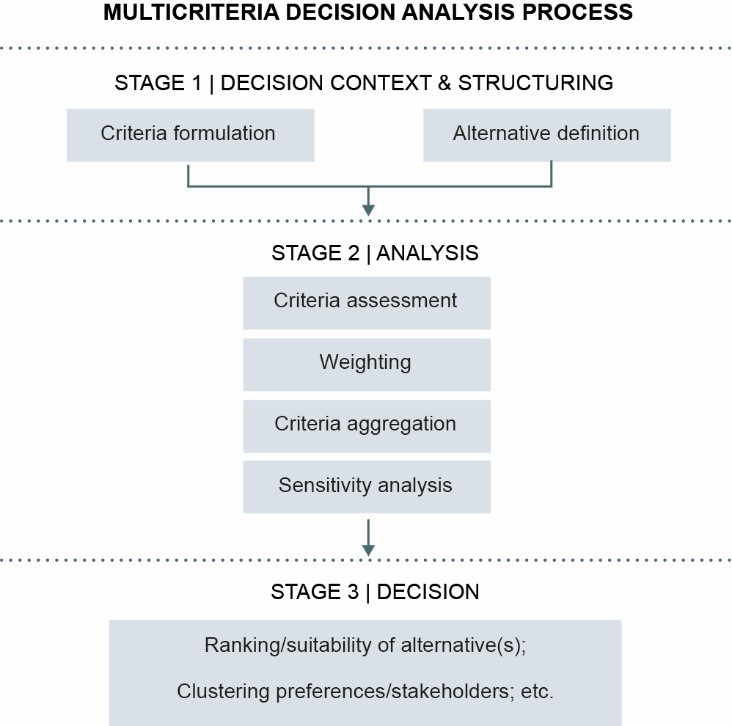

Residents of Navajo Nation (Dine Bikeyah), a sovereign Indigenous Tribal nation of the American Southwest, are vulnerable to environmental pollution from various sources such as resource extraction and unregulated solid waste disposal (Kirkemeno et al. 1998; Ong et al. 2014; Lewis et al. 2017). From the 1940s through the 1980s, one of the most sought-after resources was uranium, and today there are hundreds of abandoned uranium mines across Navajo lands. This legacy of mining and the continuing presence of AUMs has caused significant environmental contamination in Navajo Nation (Eichstaedt 1994; Masco 2013; Voyles 2015; Lewis et al. 2017). Understanding the distribution of potential exposure to these AUMs is a significant concern in Navajo communities. Some recent work to model this exposure potential includes a multi-criteria decision analysis (MCDA) (Malczewski 2006) model, developed by Lin et al. (2020) to analyze and understand potential exposure within Navajo Nation.
The MCDA model predicts potential exposure based on several environmental criteria (wind, topography, hydrology, etc.) represented as raster surfaces, in which cells contain an index value indicating this potentiality on a normalized scale of 0-1. The final model output is a weighted linear combination (WLC) of the individual criteria. This final output represents cumulative potential for exposure from the above-described environmental criteria (Lin et al. 2020).
Critical layers were created following the methodology by Lin et al. (2020). Critical layers were generated using the following data-sources: abandoned uranium mine point data sourced from the U.S. Environmental Protection Agency (USEPA) (U.S. EPA 2007) ; meteorological data sourced from the North American Regional Reanalysis (NARR) model (NOAA 2020) ; a 30-m digital elevation model (DEM) sourced from the U.S. Geological Survey (USGS) (U.S. Geological Survey n.d.) ; road networks sourced from the U.S. Census Bureau (U.S. Census Bureau n.d.) ; downslope drainage and ground water sample data sourced from USEPA and the University of New Mexico (U.S. EPA 2007; Hoover et al. 2017) (U.S. EPA 2007; Hoover et al. 2017); and vegetation data from the NASA Vegetation Index and Phenology (VIP) global dataset (Didan 2010). The critical layers (represented as raster datasets) are as follows:
• Proximity to AUM sites
• Proximity to roads
• Proximity to downslope drainages from AUM sites
• Topographic landforms
• Wind index
• Topographic Wind Exposure (TWE)
• Vegetation Robustness (NDVI)
• Groundwater contamination
This map displays an interactive version of the combined predicted exposure, including mine locations. Users can pan and zoom to a specifc location, such as their home and see the predicted exposure class for that area by clicking on the map.
The main aim of our web map was to display the described MCDA model output and make it interactive. In which a user can both visually pan and zoom on the predicted exposure surface and retrieve the predicted exposure value for a given area. Such interactivity will hopefuly it easier for a resident of Navajo Nation to, for example, know the predicted potential exposure from this model at their home’s location, or other areas of interest.
Team Member (lead): Theodros Woldeyohannes (twoldey94@unm.edu)
Team Member: Eric Brannen (ebrannen@unm.edu)
Team Member: Maggie Ramirez (mramirez10@unm.edu)
Project Advisor: Dr. Liping Yang (lipingyang@unm.edu)
This webmap was inspired by the UNM College of Pharmacy Navajo Water GIS , developed by Daniel Beene and Manideep Potluru.
This webmap takes advantage of the leaflet, bootstrap, jquery, noUISlider libraries
and leaflet.legend and leaflet-zoom-min plugins.Bureau, U. C. TIGER/Line Shapefiles. Census.gov.
Contributors, M. O., Jacob Thornton, and Bootstrap. Bootstrap.
Elevated Arsenic and Uranium Concentrations in Unregulated Water Sources on the Navajo Nation, USA | SpringerLink.JS.foundation, J. F.-. jQuery.
Leaflet — an open-source JavaScript library for interactive maps.
Beene, Daniel, & Potulu, Manideep. Navajo Water GIS. UNM College of Pharmacy.
Steps:
1. Pan – to pan (move) the map, simply click and hold a point on the map, then drag and release.
2. Zoom – to zoom in simply click the “+” symbol, and to zoom out click “-” symbol in upper left-hand corner.
3. Base map – to change the map background simply click on the circle next to “street map” or “satellite map.”
4. Toggle layers – to activate a layer simply click the square next to “mines” or “potential exposure”, and click the square again to deactivate.
5. Ensure potential exposure is toggled first, for correct layer overlap.
6. Filter mine size – simply click and drag the two rectangles on the slider at the bottom right of the map to select the ideal range of mine sizes.
7. Exposure popup – to observe exposure class and index for an area, simply click on the map.
8. Mine popup - to observe mine information, simply click on an orange point of interest, to see the mine name, and size (km2).
9. About the data – to learn more about the data, model, or the team, simply click on the “About the Data” button in the upper right-hand corner.
10. Click on the "home" symbol in the zoom-control to reset map extent.